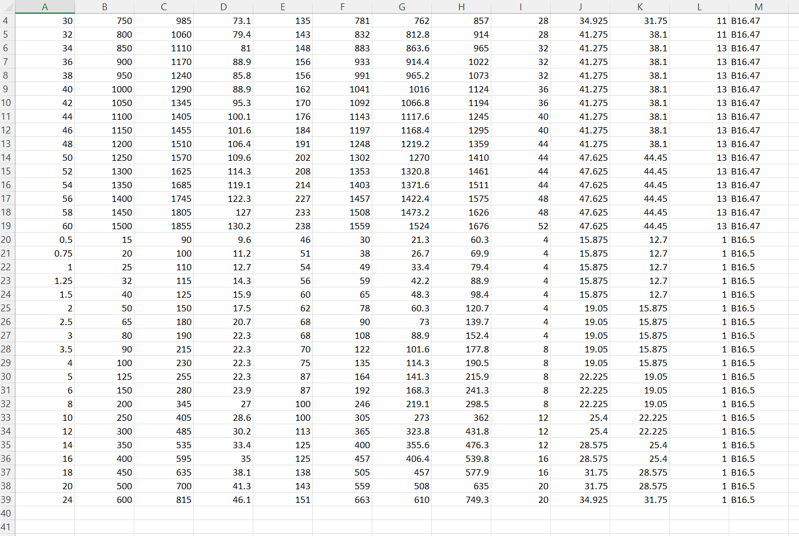
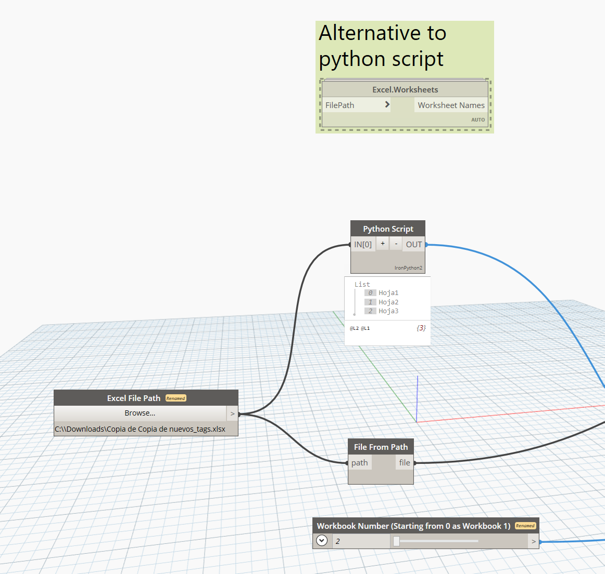
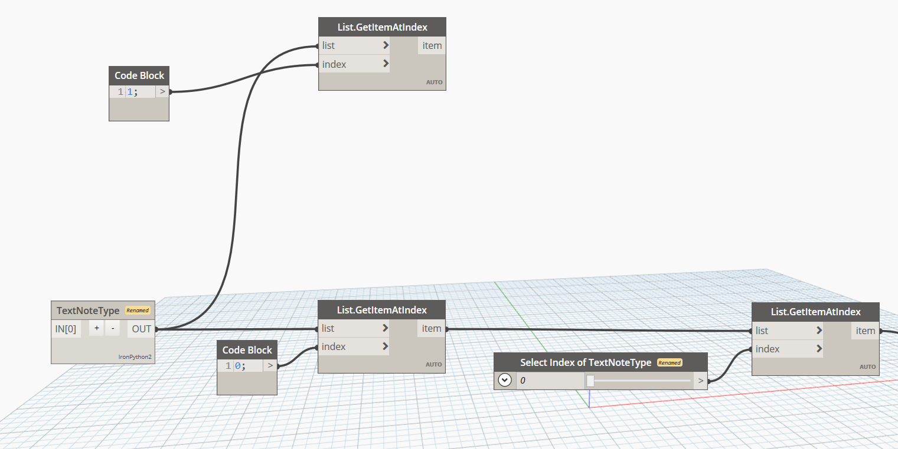
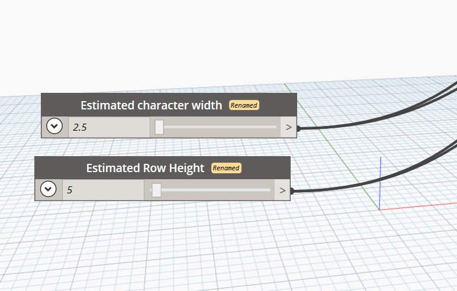
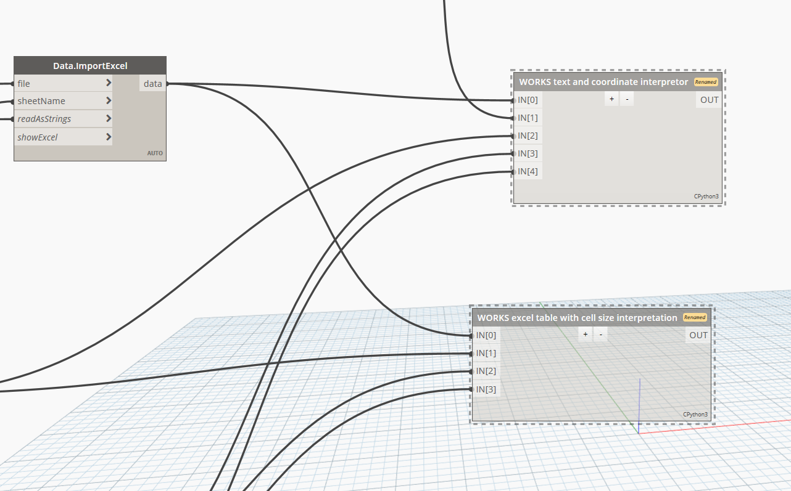
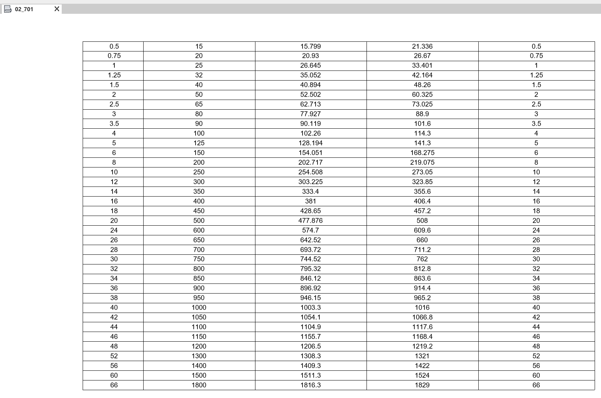

Excel Table Painter

Excel Table Painter is one of my most used Dynamo scripts. It has a lot of limitations, it cannot interpret merged cells properly and any formatting applied to the excel file will be lost and might negatively influence the outcome inside your Revit file, but regardless of these limitations, it remains a valuable tool for quickly populating tables in Revit.

First step in using Excel Table Painter is to prepare your Excel file with the data you want to populate in Revit. You will achieve the best outcomes by avoiding any formatting. I find it to be a good practice to create one table per Excel sheet. Also make sure your data is made out of values only. If you have any rounded numbers, the script will not handle that formatting. You may consider copying your calculated table values to a new file or sheet before using the script.

Once the Excel file is prepared, link its path to the Dynamo node. The python script that follows will then read the excel sheet names from which you will choose the one you want to paint using the "Workbook Number" slider. Additionally, if you have a incompatible Excel Version or your "Microsoft.Office.Interop.Excel" cannot be located for some reason the python node may have trouble interpreting the "worksheets". For that reason I left a node from Data-Shapes package that you can connect if the original node is not working.

The node called "TextNoteType" is used to get the text notes available in your Revit project. You will need to select the one you want to use in your table, again, using the number slider called "Select Index of TextNoteType".

At the bottom of the script, you will find 2 number sliders. One of them controls the width per character and the other one controls the height of each row (both in millimeters). You will need to adjust these values to fit your table in the drafting view. A good starting point is to set the row height slightly larger than the height of your Text Note Type and use half of that value to set the width per character. If you are working with a scale that is different than 1:1 you will need to multiply the width and height values accordingly, e.g. for 3mm Text, with row height of 5mm and character width of 2.5mm in scale 1:10 you may try setting the width to 25mm and the height to 50mm. The script will then read the excel file and create a text note for each cell in the table, placing them in the drafting view according to the specified width and height.

The last step is to open a drafting view (or a legend view if you want to place the table on multiple sheets) and run the script with the last 2 connected nodes frozen. Make sure that there is no errors and all your data is being read correctly. The Dynamo script has a tendency to freeze the 2nd time its been run and ignore the elements that already has been painted in your drafting view. It will work smoother if you delete all elements from your drafting view before each run. Once everything looks like it should, unfreeze the last 2 nodes and run the script and your Revit table should be ready.

Hopefully this script will help you save time and effort in populating your Revit tables. If you have any questions or feedback, feel free to reach out! You can download the script by clicking the button below or by pulling it from my GitHub repository.
Download Dynamo File